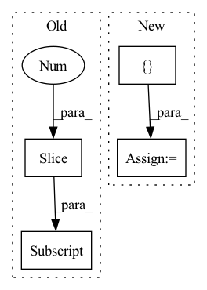

Pattern ID :559
Before Change
self.patch_size = patch_size
// Number of blocks at each level
self.num_blocks = 4**(np.arange(num_levels)[::-1])
assert (img_size // patch_size) % np.sqrt(self.num_blocks[0]) == 0, \
"First level blocks don\"t fit evenly. Check `img_size`, `patch_size`, and `num_levels`"
// Block edge size in units of patchesAfter Change
levels.append(NestLevel(
self.num_blocks[i], self.block_size, self.seq_length, num_heads[i], depths[i], dim, prev_dim,
mlp_ratio, qkv_bias, drop_rate, attn_drop_rate, dp_rates[i], norm_layer, act_layer, pad_type=pad_type))
self.feature_info += [ dict(num_chs=dim, reduction=curr_stride, module=f"levels.{i}")In pattern: SUPERPATTERN
Frequency: 6
Non-data size: 4
Instances Fragment ID: 2091743
Project Name: feng-lab/pytorch-image-models
Commit Name: 81cd6863c8c9515de8884e8a8ea0445ec08b4486
Time: 2021-07-05
Author: rwightman@gmail.com
File Name: timm/models/nest.py
M Class Name: Nest
N Class Name: Nest
M Method Name: __init__(19)
N Method Name: __init__(19)
M Parent Class: nn.Module
N Parent Class: nn.Module
M File Name: timm/models/nest.py
N File Name: timm/models/nest.py
M Start Line: 216
M End Line: 301
N Start Line: 220
N End Line: 300
Before Change
super(AddonNN, self).__init__()
// keep everything but the last layer
self.featurizer = nn.Sequential(*list(model.classifier.children())[:-1] )
// freeze the featurizer
for param in self.featurizer.parameters():After Change
assert stack_num in set((1,2,3))
self.FEAT_SIZE = { 1: 32768, 2: 16384, 3: 32768}
self.stack_num = stack_num
self.featurizer = model
Fragment ID: 2091740
Project Name: microsoft/archai
Commit Name: 16a8b37ef55c82318b3c89402322a1a36f063113
Time: 2022-12-16
Author: dedey@microsoft.com
File Name: archai/algos/proxynas/addon_nn.py
M Class Name: AddonNN
N Class Name: AddonNN
M Method Name: __init__(4)
N Method Name: __init__(4)
M Parent Class: nn.Module
N Parent Class: nn.Module
M File Name: archai/algos/proxynas/addon_nn.py
N File Name: archai/algos/proxynas/addon_nn.py
M Start Line: 12
M End Line: 29
N Start Line: 8
N End Line: 23
Before Change
if use_se:
use_ses = [False] * (layers[0] + layers[1]) + \
[True] * sum(layers[2:] )
else:
use_ses = [False] * sum(layers[:])
After Change
layers = [1, 2, 2, 3, 3, 5]
strides = [1, 2, 2, 2, 1, 2]
use_ses = [ False, False, True, True, True, True Fragment ID: 2091739
Project Name: clovaai/rexnet
Commit Name: 104f2184754d97b8050f24bdf39f650b3e80cad8
Time: 2020-08-04
Author: dongyoon.han@navercorp.com
File Name: rexnetv1.py
M Class Name: ReXNetV1
N Class Name: ReXNetV1
M Method Name: __init__(10)
N Method Name: __init__(11)
M Parent Class: nn.Module
N Parent Class: nn.Module
M File Name: rexnetv1.py
N File Name: rexnetv1.py
M Start Line: 116
M End Line: 162
N Start Line: 133
N End Line: 172
Before Change
"E": [64, 64, "M", 128, 128, "M", 256, 256, 256, 256, "M", 512, 512, 512, 512, "M", 512, 512, 512, 512],
}
self.filter[type] = [int(i * width_mult) if i != "M" else i for i in self.filter[type]][:-1] + [512]
// define VGG-19 feature extractor layers
if self.input_shape > 64:After Change
if "human" in self.mode:
layers += [nn.MaxPool2d(2, 2)]
elif self.mode == "autosc":
layers += [ nn.MaxPool2d(2, 2, ceil_mode=True) Fragment ID: 2091737
Project Name: lorenmt/shape-adaptor
Commit Name: 080b6fdad63f71e54ed0fdaa379c604463d0bcb7
Time: 2020-07-31
Author: sk.lorenmt@gmail.com
File Name: model_list.py
M Class Name: VGG
N Class Name: VGG
M Method Name: __init__(7)
N Method Name: __init__(9)
M Parent Class: nn.Module
N Parent Class: nn.Module
M File Name: model_list.py
N File Name: model_list.py
M Start Line: 65
M End Line: 136
N Start Line: 71
N End Line: 146
Before Change
self.mid_after = blocks(mid_dim, mid_dim)
self.mid_upsample = Upsample(mid_dim, dims[-2])
for ind, ((dim_in, dim_out), nested_unet_depth) in enumerate(zip(reversed(in_out[:-1] ), reversed(nested_unet_depths[:-1]))):
is_last = ind >= (num_resolutions - 1)
self.ups.append(nn.ModuleList([After Change
skip_dims = []
down_stage_parameters = [
in_out,
nested_unet_depths,
num_blocks_per_stage = [reversed(params[:-1]) for params in down_stage_parameters]
// downs
Fragment ID: 2091736
Project Name: lucidrains/x-unet
Commit Name: b5ef4956e71ab6cf4fee8cc09f4680bc64ed4555
Time: 2022-07-25
Author: lucidrains@gmail.com
File Name: x_unet/x_unet.py
M Class Name: XUnet
N Class Name: XUnet
M Method Name: __init__(12)
N Method Name: __init__(11)
M Parent Class: nn.Module
N Parent Class: nn.Module
M File Name: x_unet/x_unet.py
N File Name: x_unet/x_unet.py
M Start Line: 230
M End Line: 270
N Start Line: 216
N End Line: 293
Before Change
)
layers = []
for resl in list(resl2ch.keys())[::-1] :
layers += [
ResBlock(resl2ch[resl], resl2ch[resl//2])
]After Change
nn.LeakyReLU(0.2, inplace=True)
)
resl = image_size
blocks = []
while resl > 4:
resl = resl // 2
channels *= 2
ichannels, ochannels = ochannels, check_c(channels) Fragment ID: 2091732
Project Name: stomoya/animeface
Commit Name: b3652bae109c713da926d5532eb014b02135da52
Time: 2020-12-14
Author: blackie0110@gmail.com
File Name: implementations/StyleGAN2/model.py
M Class Name: Discriminator
N Class Name: Discriminator
M Method Name: __init__(7)
N Method Name: __init__(1)
M Parent Class: nn.Module
N Parent Class: nn.Module
M File Name: implementations/StyleGAN2/model.py
N File Name: implementations/StyleGAN2/model.py
M Start Line: 354
M End Line: 387
N Start Line: 364
N End Line: 389